The speaker argues jargon-heavy AI pitches like 'agentic orchestration SecOps platform for enterprises' generate no emotional response, citing it as a real pitch she heard from a Series B startup. The fix is to open with the buyer's day-to-day pain point before describing what was built.
“we built an agentic orchestration SecOps platform for enterprises. [music] Yeah, that's a real pitch I've heard from a series B startup recently.”
▶ watch at 01:05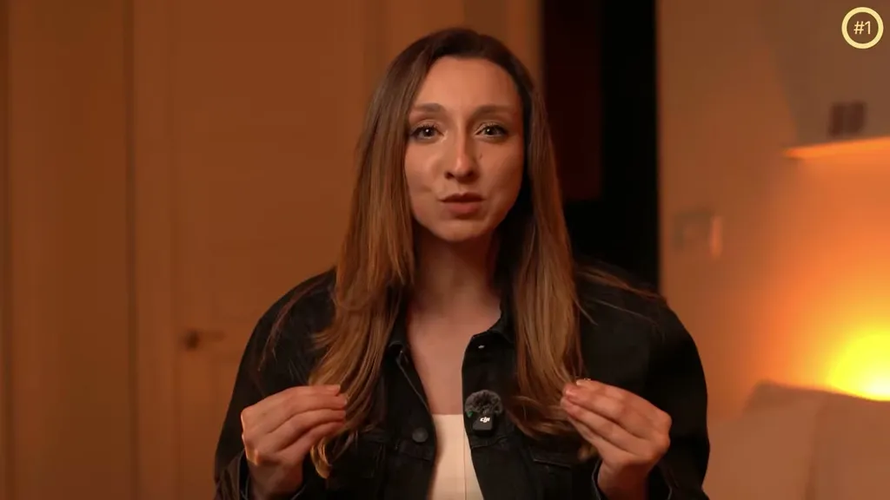
The recommended pitch format takes about 20 seconds and has three parts: identify the wound, say 'we fix that,' then show how. To make the product concept click, she proposes a test -- could a 17-year-old understand what you do -- and recommends replacing abstract terms with concrete mental images, such as 'Devon, the AI software engineer' or 'a smoke alarm for AI behavior.'
“In about 20 seconds, you need to do three things. Identify the wound, say we fix that, then show how.”
▶ watch at 02:05“Here's the test. Could a 17-year-old understand what you do? If not, you're probably going to lose the room.”
▶ watch at 02:38“Give me a mental image instead. "Devon, the AI software engineer." Great. I can picture that instantly.”
▶ watch at 03:40Rather than vague claims like 'we improve code quality' or 'we increase productivity,' the speaker recommends showing a specific before-and-after state, such as a support team going from 30 minutes of manual digging through docs and tickets to a 10-second sourced answer.
“Before your support team spends 30 minutes digging through docs and tickets, with us, they ask one question and get the answer in 10 seconds with the sources attached.”
▶ watch at 04:15The framing implicitly targets a specific failure mode common at AI Engineer-adjacent startups: technical founders describing architecture (orchestration, multi-agent) instead of outcomes, which is a pattern worth checking against any pitch deck before a fundraise or sales call (ours).
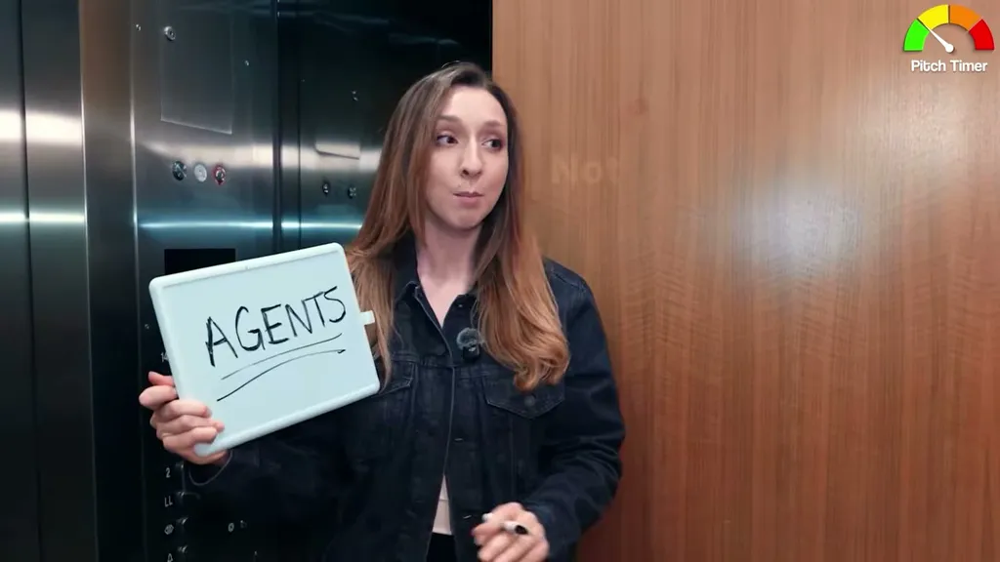
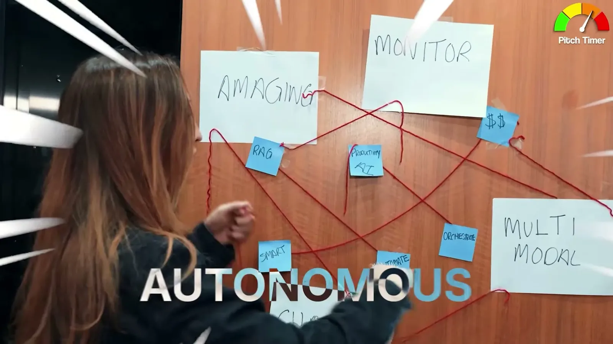
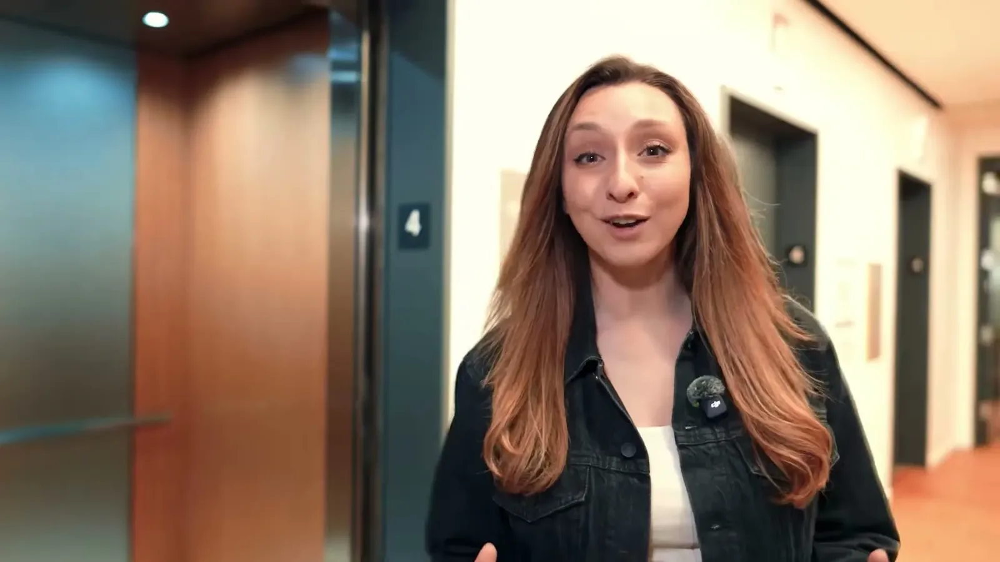
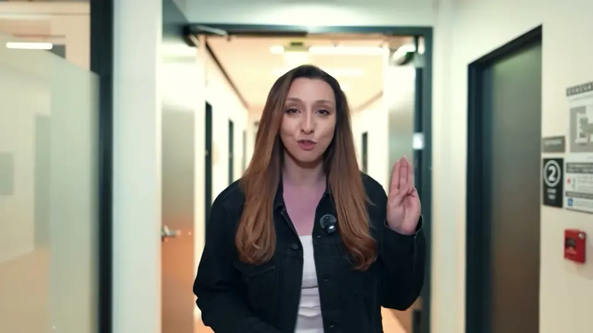
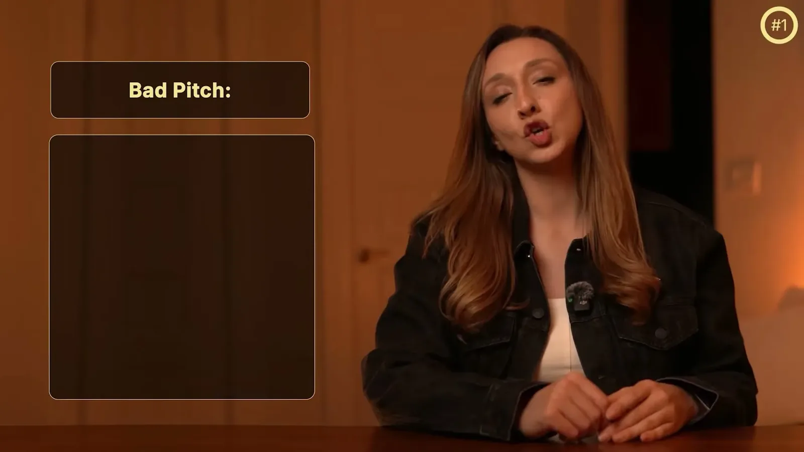
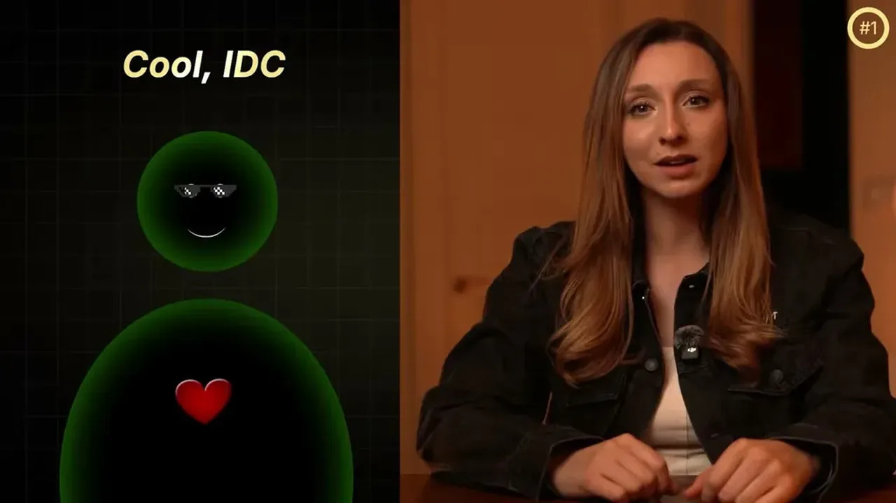
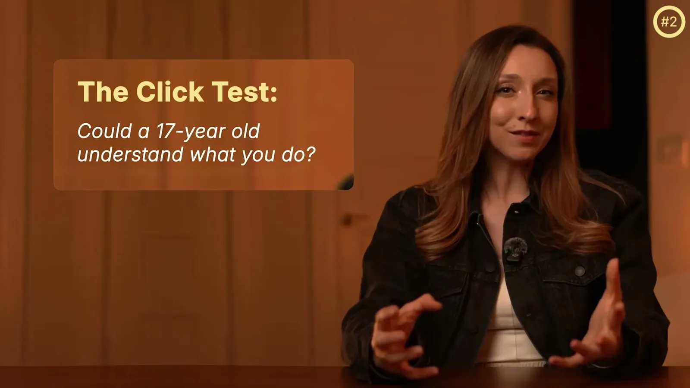
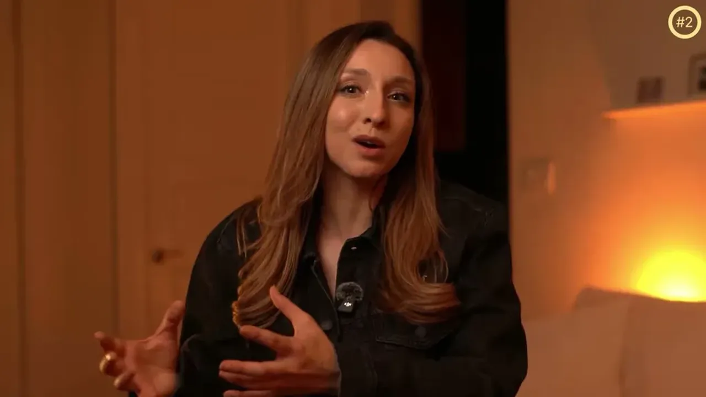
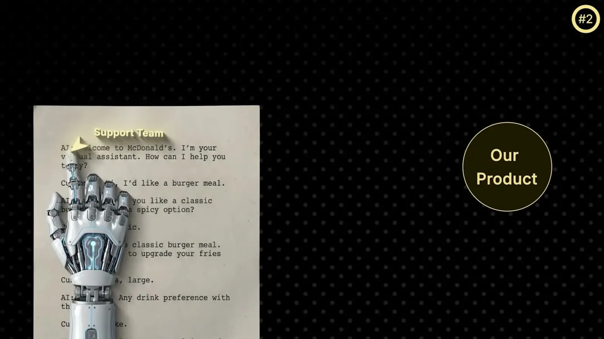
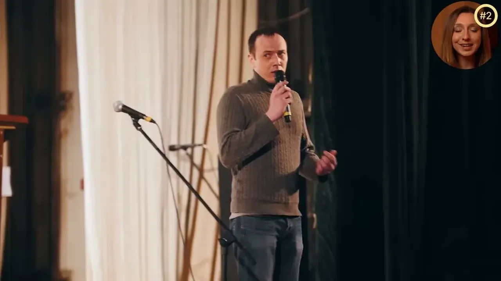
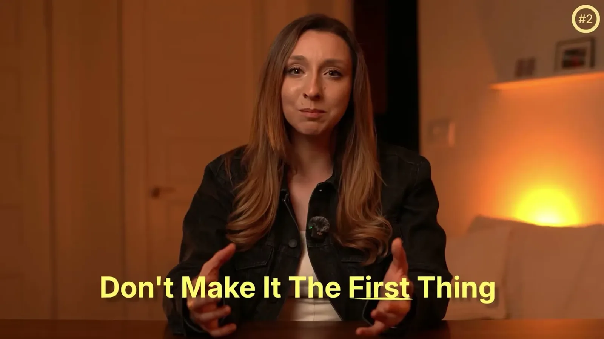
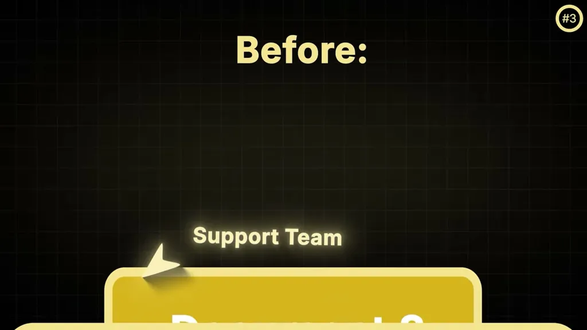
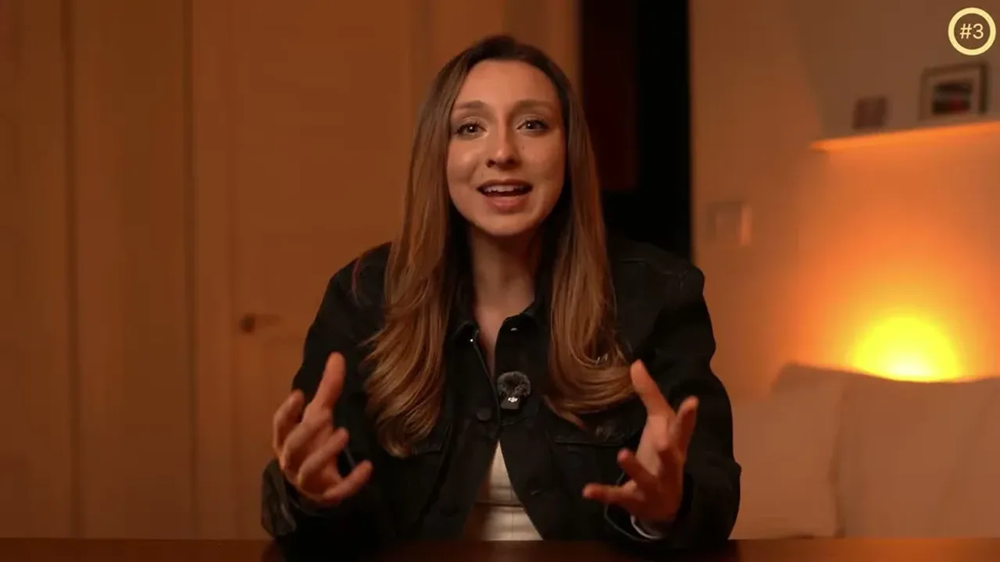
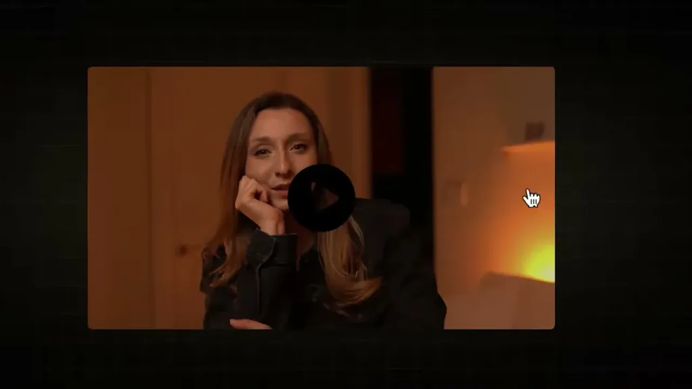
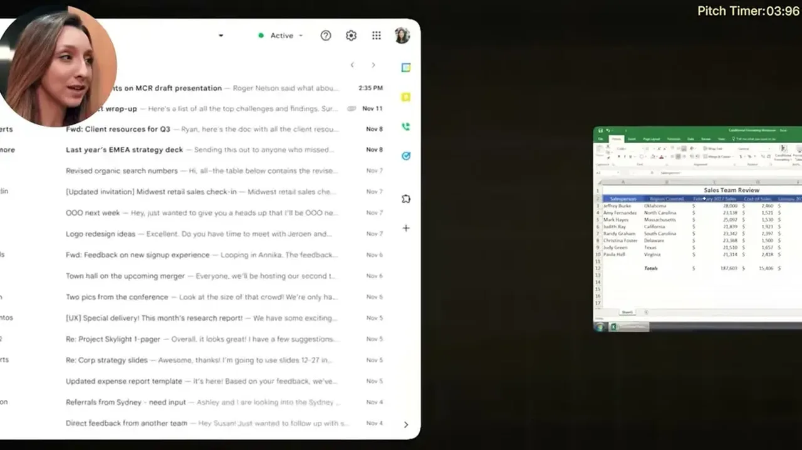
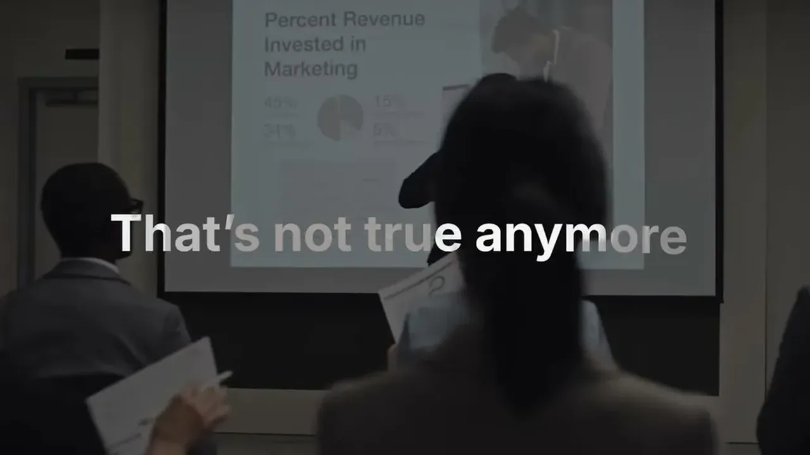
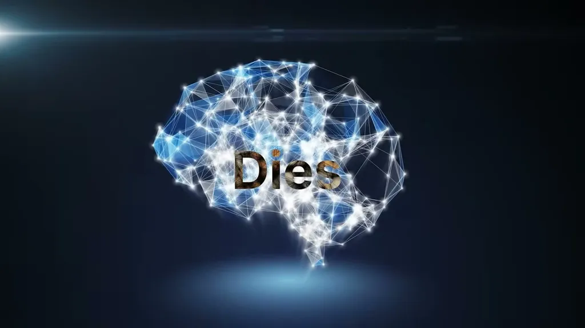
| Stance | Claim | t |
|---|---|---|
| warns | Abstract, jargon-heavy pitches like 'agentic orchestration SecOps platform for enterprises' generate no emotional response from buyers. | 01:05 |
| recommends | In about 20 seconds, a pitch should identify the wound, say 'we fix that,' then show how. | 02:05 |
| recommends | A pitch should pass the test of whether a 17-year-old could understand what the product does, or it risks losing the room. | 02:38 |
| recommends | Replace abstract product descriptions with concrete mental images, like 'Devon, the AI software engineer,' rather than unclear jargon. | 03:40 |
| recommends | Prove product value with a specific before/after comparison rather than vague claims of improved productivity. | 04:15 |
Machine-readable copy embedded in this page (script#ontology) and in the corpus ontology.